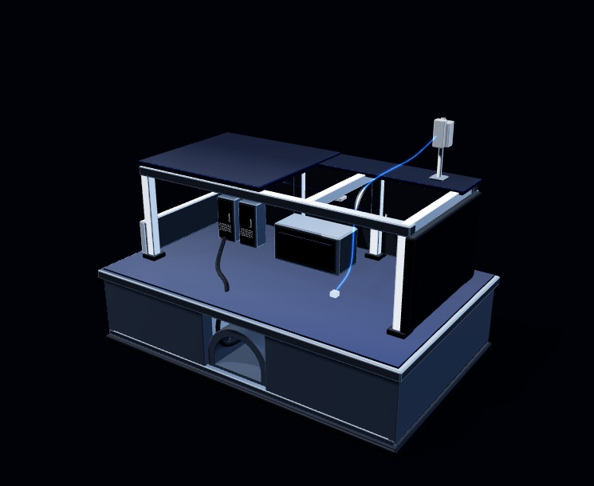

Space and movement
Distinguish fixed equipment from moving devices, and map indoor, underground and obstructed areas.
Connect AI
Cameras, sensors and staff devices operate in places with very different connectivity conditions. Combine private 5G, Wi-Fi mesh and PLC around the site’s layout and existing infrastructure.
Selected pathPrivate core → Base station → Site

Explore the route for each connection method.Conceptual model
A view of connection
Connectivity requirements begin with device locations and movement. Coverage areas, existing cabling and power, and data requirements inform the choice of media and equipment placement.
Distinguish fixed equipment from moving devices, and map indoor, underground and obstructed areas.
Identify wired networks, power lines, power sources and available installation points.
Establish device counts, data requirements and maintenance needs.
Ways to connect a site
Consider wireless mobility alongside the use of existing cabling to select an approach for each part of the site.
A dedicated wireless network for a defined facility or area. Device mobility and service requirements guide base-station placement and network design.
Conceptual connections between a private core, base station and devices.
Connected wireless nodes provide access for site devices. Obstacles and movement patterns guide node placement and alternate routes.
Illustrative wireless paths. Node placement follows the radio environment.
PLC uses power lines to carry data. Where new communications cabling is difficult to install, wiring and electrical conditions determine suitability.
Conceptual view separating the power-line segment from the device connection.
Where to begin
Fixed equipment and moving devices need access to a facility network.
New cabling and wireless coverage face physical constraints.
Devices and work areas move as a project progresses.
A shared process
Document required locations, devices and existing connectivity.
Combine media based on wireless reach and existing cabling conditions.
Plan equipment placement, device access, maintenance and future changes.
Common questions
Select the technologies needed for each segment’s layout, cabling and devices. A site may use one approach or combine different media for upstream links and device access.
Drawings provide a starting point for layout and placement. Radio conditions and wiring quality are among the items that need on-site assessment.
Connect AI addresses the communication path into the site. Where devices and service providers share infrastructure, per-device separation requirements can be defined separately through Isolate AI.
Design the next connection with us
Share the areas and devices that need to connect, along with existing cabling or wireless infrastructure. These details help establish the viable options.
Discuss site connectivity